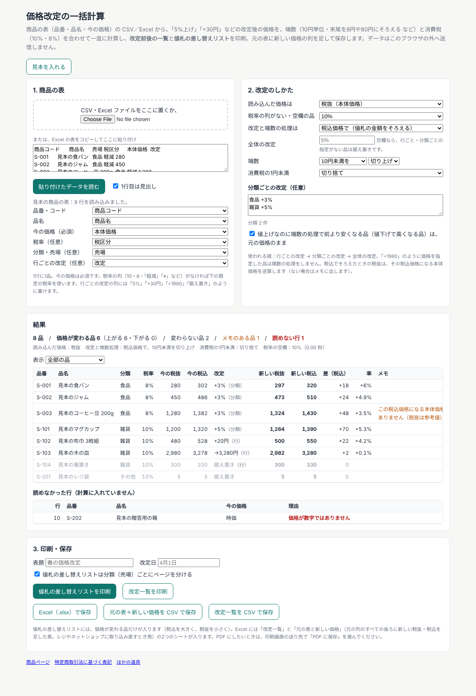

価格改定の一括計算
商品の表（品番・品名・今の価格）の CSV／Excel から、値上げ・値下げの改定後の価格をまとめて計算するツールです。「5%上げて、税込で10円単位に切り上げ」「末尾を80円にそろえる」のような端数の決まりと、消費税（10%・軽減税率8%）の税込・税抜を一度に出します。
- 改定一覧：品ごとに今の税抜・税込、改定の内容、新しい税抜・税込、差額を並べた表
- 値札の差し替えリスト：価格が変わる品だけを売場（分類）ごとに並べた、作業用のチェック欄つきの表
- 新しい価格つきの表：元の表のすべての列の後ろに新しい税抜・税込を足して保存。レジやネットショップに取り込み直すときに使えます
ソフトのインストールは不要で、いつものブラウザで動きます。
お試し版はすべての機能を使えて、商品の表は先頭15行までです。決済が終わると、そのまま製品版の画面に移動します。ブックマークしておけば何度でも使えます。

見本のデータ（架空の店の品）で作った例。品名は説明用のもので、実在の店・商品とは関係ありません。
こんなときに
- 仕入れ値が上がり、数百品の価格を Excel の式と手直しで改定している
- 「税込で末尾を80円に」「10円単位で切り上げ」のような決まりで、1品ずつ電卓で確かめている
- 食品（8%）と雑貨（10%）が混ざっていて、税込・税抜の計算がややこしい
- 改定のあと、どの値札を差し替えればよいかの一覧を売場ごとに作りたい
できること
- 改定の指定：全体に「5%」「+30円」、分類ごとに「食品 +3%」「雑貨 +5%」、品ごとに表の列で「=1980」「据え置き」と指定できます（品ごと → 分類ごと → 全体の順に使います）。値下げ（「-10%」「3%引き」）もできます
- 端数の処理：1円・10円・100円未満の切り上げ・切り捨て・四捨五入、または「末尾を 8・80・98・980 円にそろえる」（上の値・下の値・近い方）
- 税込でそろえるか、税抜でそろえるかを選べます。読み込む価格が税抜か税込かも選べます（列の見出しに「税込」「本体」などがあれば自動で選びます）
- 消費税：品ごとの税率（10%・8%。表の「8」「軽減」「※」などを読みます）、1円未満の端数は切り捨て・四捨五入・切り上げから選べます。税込でそろえたときは、その税込価格になる本体価格を逆算し、どの本体価格でもその税込価格にならない場合（例：10%・切り捨てで税込1,099円）はメモに出します
- 確かめやすく：値上げなのに端数の処理で前より安くなる品は元の価格のまま（切り替え可）。端数の処理で改定率が指定と大きく違う品（例：5円の品を末尾80円にそろえる）や、読めない価格・税率の行は、行番号つきで一覧にします
- 印刷と保存：改定一覧と値札の差し替えリストを A4 で印刷。Excel ファイル（.xlsx、2シート）か CSV で保存できます。価格は数値、品番は文字のまま保存し、先頭の0を消しません
- CSV（UTF-8・Shift_JIS）と Excel ファイル（.xlsx）を読めます。列は見出し（「品番」「商品コード」「JAN」「売価」「本体価格」「税区分」「部門」「売場」など）から自動で選び、違っていたら画面で選び直せます。Excel の表をコピーして貼り付けても使えます
できないこと（購入前にご確認ください）
- レジ・ネットショップとはつながりません。管理画面から商品の表を書き出し、保存した表を取り込み直してください（取り込みの形式に合わせた列の並べ替えは 列そろえ が使えます）
- いくらにするべきかの判断・助言はしません。指定した改定と端数の決まりのとおりに計算するだけです
- 税率が 10%・8% 以外の品、税の端数を1品ずつでなく合計で計算する場合には対応しません。税の扱いが分からないときは、税務署や税理士にご確認ください
- 値札そのもの（値札の形・ラベル用紙への面付け）は印刷しません。作るのは差し替える品の一覧です
- スマートフォンでは操作しにくいため、パソコンでお使いください
Excel だけで計算するなら
A 列に今の本体価格（税抜）があるとき、5% 上げて10円未満を切り上げるには
=ROUNDUP(ROUND(A2*1.05,2),-1)
と入れて下までコピーします。内側の ROUND は念のためです。小数の計算のごくわずかな誤差で、ちょうど10円単位になる価格が1つ上に切り上がることがあるため、先に小数第2位で丸めています。末尾を80円にそろえる（上の値にする）には
=CEILING(ROUND(A2*1.05,2)-80,100)+80
です（1,000円 → 1,080円、480円 → 580円）。新しい本体価格が B 列にあるとき、消費税10%で1円未満を切り捨てた税込価格は
=ROUNDDOWN(B2*110/100,0)
です（軽減税率の品は 110 を 108 に）。1.1 を掛けるより、110 を掛けて 100 で割る方が誤差が出ません。
このツールが向いているのは、分類ごとに率が違う、8% と 10% の品が混ざっている、税込で末尾をそろえたいが本体価格も必要、据え置きや価格を指定する品が混ざっている、差し替える値札の一覧も作りたい、といったときです。
よくある質問
| データはどこかに送られますか？ | 送られません。読み込み・計算・印刷・保存はすべてお使いのブラウザの中で行います。改定の設定などだけをブラウザに保存し、表の中身は保存しません。 |
|---|---|
| どのレジ・ネットショップの表に対応していますか？ | 特定のサービス専用ではありません。1行に1品（品番か品名・今の価格）の形の表であれば使えます。列の見出しが違っても、画面で列を選べます。 |
| 値札の表示はどちらを大きくすればよいですか？ | 消費者向けの値札は、税込の総額を表示することになっています。差し替えリストは税込を大きく、税抜を小さく出しています。表示のしかたの詳しい決まりは、国税庁などの案内でご確認ください。 |
| 何行まで使えますか？ | 製品版は行数の制限はありません（5万行で1秒以内に計算できることを確かめています）。画面の一覧は500品まで表示し、全部は印刷・保存に入ります。 |
安心してお使いいただくために
- 表はお使いのブラウザの中だけで処理し、サーバーには送信しません
- 動作環境：最新版の Chrome・Safari・Edge・Firefox（パソコン）
- 説明どおりに動かない場合は、ご購入から7日以内にご連絡いただければ返金します
改定の前後で商品の表のどこが変わったかを確かめるなら 2つの CSV の差分比較、商品コードの点検は 商品コードの検査 もあります。